Describe how AVEVA Application Server handles security
Explain the security models available in the IDE
Configure general security permissions and operational permissions
Enable OS Group-based authentication in a Galaxy
Create and configure security groups
Add security roles and assign permissions to them
27.1 Security Overview
Pages 9-3 through 9-4
Security in AVEVA Application Server is designed to prevent users from performing unauthorized activities. This includes users of:
IDE — for configuring and managing objects
Operations Control Management Console (OCMC) — for performing maintenance and system administration functions
Runtime operations — any live process control activities
Important Limitation: The security system is not designed to stop malicious access. Passwords are encrypted but stored in an accessible database. For higher-level security, IT teams can integrate with Microsoft tools using OS authentication, password timeout, and electronic signature authentication.
The Security Model
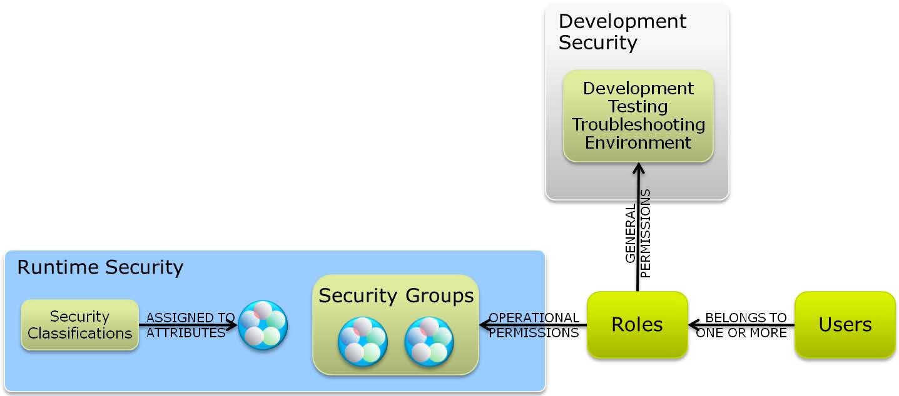
Figure 27-1: The Security Model diagram shows the hierarchical relationships between Development Security (IDE configuration), Runtime Security (operational permissions), Security Classifications, Security Groups, Roles, and Users. Security Classifications are assigned to AutomationObject attributes; Security Groups grant Operational Permissions to Roles; Users belong to one or more Roles. (page 9-3)
The security model has two major domains:
Development Security (General Permissions): Controls access to the IDE for configuring and managing objects in the Development/Testing/Troubleshooting environment.
Runtime Security (Operational Permissions): Controls access to live operational activities. This involves:
Security Classifications — assigned to each AutomationObject attribute to define who can write to it
Security Groups — group objects that need identical security behavior
Roles — generalize user functions (e.g., Intake Operator, Dispatcher)
Users — the final component; users can be granted multiple Roles
For example, a DiscreteDevice may have attributes for operation (set by an operator) and tuning (set by a technician). Rather than configuring access for every user on every object individually, the system uses Security Groups, Roles, and Classifications to simplify management.
Security Groups
Group objects that need to behave identically with respect to security
Every AutomationObject belongs to exactly one Security Group
Default: all new objects belong to the Default Security Group (cannot be removed)
Roles
Generalize user functions (e.g., Software Engineer, Intake Operator, Dispatcher)
Granted permissions onto Security Groups
If a Role has Tuning access to a Security Group, that Role has write permissions to all attributes classified as Tuning in that group
Also granted utility function permissions (e.g., Deploy, Can Edit)
Users
The final component defining system access
Users can be granted as many Roles as needed
Default users: Administrator and DefaultUser (cannot be deleted)
Security Configuration Steps
Security is configured in the Configure Security dialog box by:
Enabling Security
Defining your Security Model
Mapping Users to the Security Model
Mapping Automation Objects to the Security Model
27.2 Authentication Modes
Pages 9-5 through 9-7
Figure 27-2: The Security Settings window shows the Authentication mode tab with radio buttons for None, Galaxy, OS User based, OS Group based, and Authentication providers. OS Group based is selected, with Login time set to 3000 milliseconds. (page 9-5)
The Authentication Mode page lets you choose the Galaxy security mode:
Mode
Description
None
Default for new Galaxies. Open Security — all functions open to all users. No authentication, no login dialogs.
Galaxy
Uses local Galaxy configuration for authentication. Creates a user security system controlled by the Galaxy database.
OS User based
Enables authorization of individual OS users. Leverages the operating system (NT) user authentication on an individual user basis.
OS Group based
Enables authorization based on OS Group membership. Maps OS groups to Galaxy security roles. Includes Login time and Role update intervals.
Authentication providers
Uses AVEVA Identity Manager (AIM) with OS security and Azure Active Directory (AD).
OS Group Based — Configurable Intervals
Login time (ms): Timeout for validating user membership against OS groups. After timeout, defaults to local cache. Use for intermittent/slow networks. Min: 0 (off), Max: 9,999,999, Default: 0 (disabled).
Role update (ms): Time between each validation attempt per OS group. Minimizes network usage. Operates independently of Login time.
Authentication Mode Behaviors:
Open security gives all users DefaultUser credentials — no login dialogs
Switching modes disables users from the old mode (not deleted, just disabled)
When switching to any mode other than None, you must log in after closing the dialog
When Galaxy authentication is selected, the IDE customizes the UI to the user's preferences
OS User Based: user provides domain, username, and password
OS Group Based: user provides domain, username, and password; OS groups mapped to Galaxy roles
User Authentication
Client utilities (IDE, OCMC, InTouch for System Platform) require users to be authenticated. An authenticated user is granted the sum of all Permissions within their assumed Roles.
27.3 Security Permissions
Pages 9-9 through 9-10
General Permissions
General permissions relate to application configuration and administration tasks. You cannot modify the General permissions for the Administrator role. They include:
IDE Permissions
SMC Permissions
Can Start the IDE
Can Start the SMC
Importing and Exporting
Can Start/Stop Engine/Platform
General Configuration
Can Write to GObject Attributes using ObjectViewer
System Configuration
DeviceIntegration Objects
Application Configuration
Framework Configuration
User Configuration
Deployment Permissions
Graphic Management Permissions
Manage Alarm Strategy
Operational Permissions
Operational permissions relate to the Security Groups listed on the Security Groups page. By default, the Administrator has all permissions.
Permission
Description
Can Modify "Operate" Attributes
Daily operational tasks: changing setpoints, outputs, control modes
Can Modify "Tune" Attributes
Tune attributes in live runtime: alarm setpoint sensitivity, PID tuning
Can Modify "Configure" Attributes
Major configuration changes; requires object set to Off scan
Can Acknowledge Alarms
Manually acknowledge active alarms in runtime
Can Shelve Alarms
Temporarily suppress or restore alarm notifications
Can Modify Alarm Modes
Change operational mode of an alarm
Can Modify Plant States
Modify plant states controlling state-based alarm rules
Can Verify Writes
Authentication signature for Verified Writes security classification
Security Levels Summary:
Full Access: All General + All Operational permissions (Administrator role)
Limited Access: Selective General + Selective Operational permissions per role
No Access: Permissions unchecked — user is denied that function
27.4 Lab 16 — Configuring Security
Pages 9-11 through 9-37
Lab 16 — Configuring Security
In this lab, you will enable OS Group-based security in the Galaxy, create security groups based on plant areas, add OS user groups as security roles, and configure General and Operational permissions for each role.
Lab Objectives
Configure security in a Galaxy
Enable OS Group security
Create and use security groups
Add security roles and assign permissions
Configure general permissions
Enable Security in the Galaxy
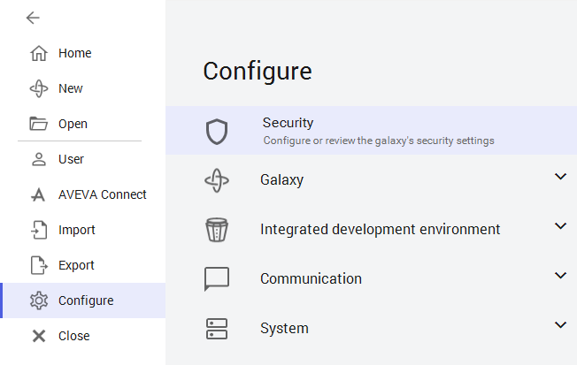
Figure 27-3: In the IDE, select Galaxy menu → Configure. In the Configure area, select Security (shield icon) to open the security configuration. (page 9-12)
Step 1: In the IDE, on the Galaxy menu, select Configure.
Step 2: In the Configure area, select Security.
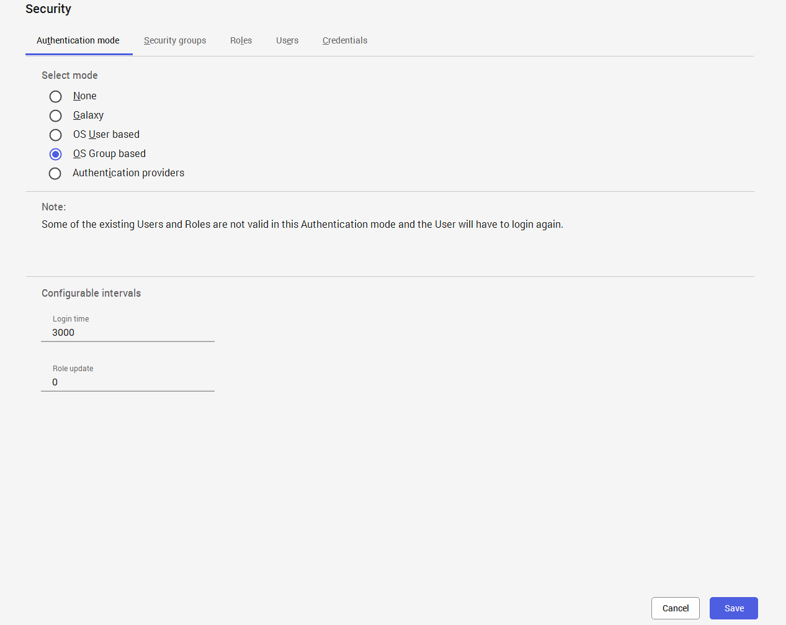
Figure 27-4: On the Authentication mode tab, select "OS Group based" and enter 3000 in the Login time field. Increasing Login time creates a more seamless experience when testing different users. Do NOT click Save at this point!(page 9-13)
Step 3: On the Authentication mode tab, select the OS Group based option.
Step 4: In the Login time field, enter 3000.
Why 3000 ms? Increasing the Login time allows for a more seamless logging-in and testing of different users later in the lab.
Important: Do NOT click Save at this point! You still need to configure security groups and roles before saving.
Configure Security Groups
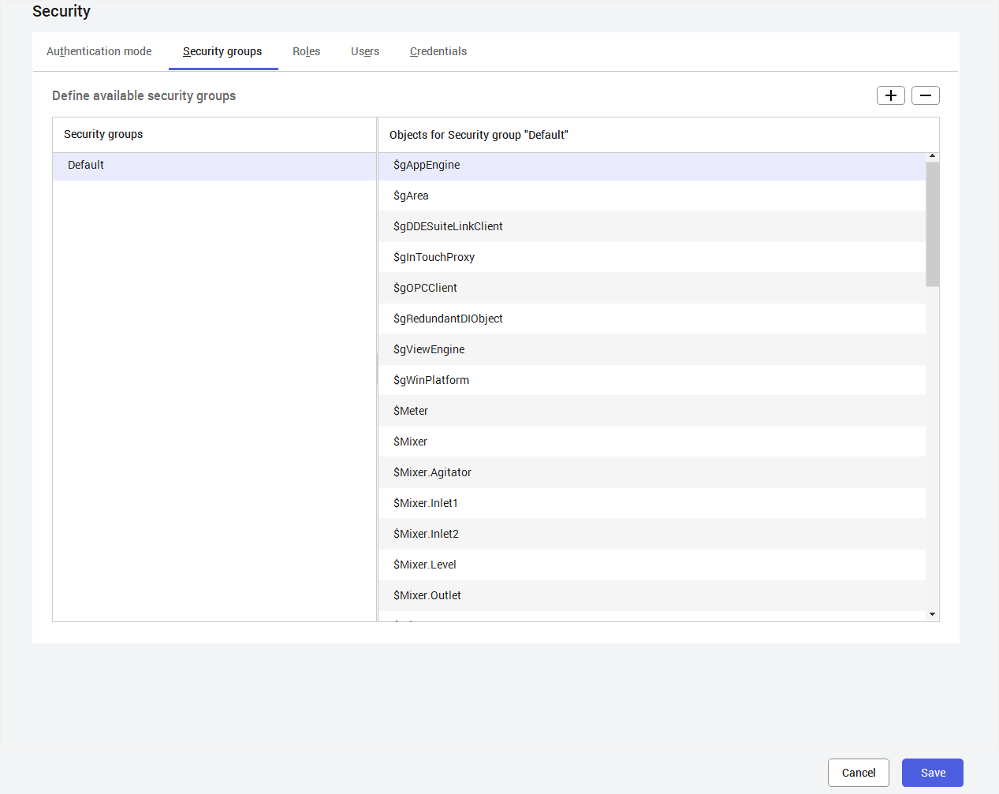
Figure 27-5: The Security groups tab shows the Default security group with its assigned objects. All new objects belong to the Default group by default. (page 9-14)
Step 5: Click the Security groups tab.
Step 6: Click the Add new Security group (+) button.
Step 7: In the Security groups list, enter Line1, and then press Enter.
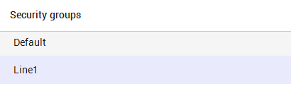
Figure 27-6: After adding Line1, the Security groups list now shows Default and Line1. (page 9-14)
Step 8: Add 2 more security groups: Line2 and ControlSystem.
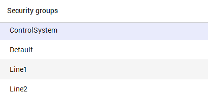
Figure 27-7: The Security groups list now contains four groups: ControlSystem, Default, Line1, and Line2. (page 9-15)
Step 9: Select the Default security group.
Assign Objects to Security Groups
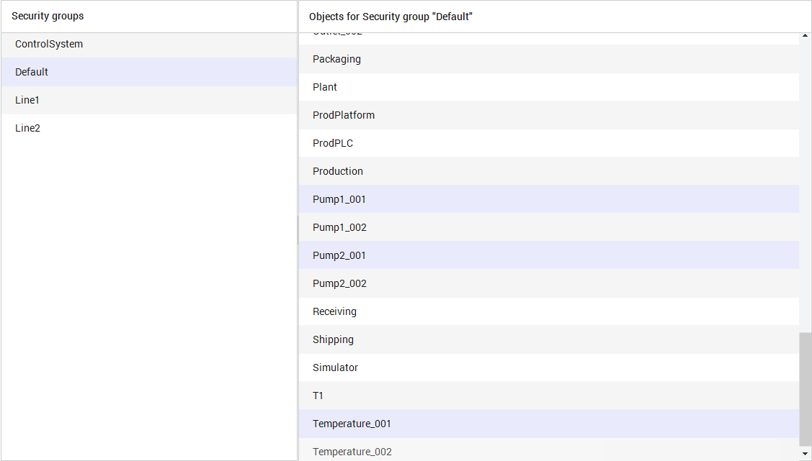
Figure 27-8: Select instances from the Default group and drag them to the Line1 security group. Objects to move: Agitator_001, Inlet1_001, Inlet2_001, Level_001, Line1, Mixer100, Outlet_001, Pump1_001, Pump2_001, Temperature_001. (page 9-16)
Step 10: In the Objects for Security group 'Default' list, select the following instances and drag them to the Line1 security group:
Agitator_001
Inlet1_001
Inlet2_001
Level_001
Line1
Mixer100
Outlet_001
Pump1_001
Pump2_001
Temperature_001
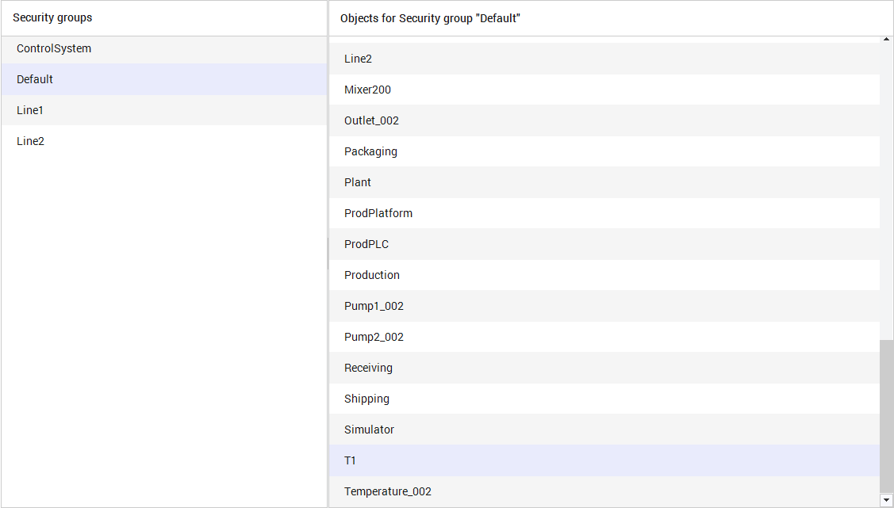
Figure 27-9: Click Line1 to verify the instances have been moved. The Objects for Security group "Line1" now shows: Agitator_001, Inlet1_001, Inlet2_001, Level_001, Line1, Mixer100, Outlet_001, Pump1_001, Pump2_001, Temperature_001. (page 9-17)
Step 11: Click Line1 to verify the instances have been moved.
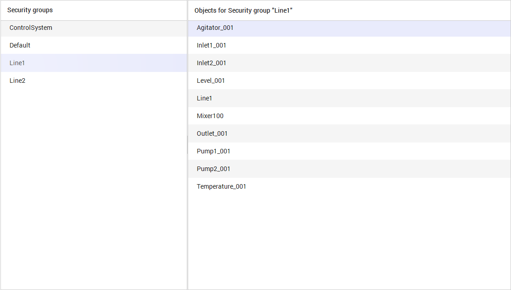
Figure 27-10: Default security group after the Line1 objects have been removed — the moved instances are no longer listed here. (page 9-17)
Step 12: Move the following instances from the Default security group to the Line2 security group:
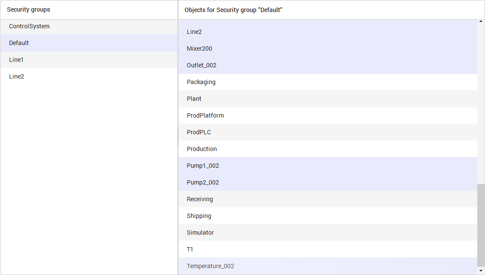
Figure 27-10a: Select objects from the Default security group and drag them to the Line2 security group. Objects to move: Agitator_002, Inlet1_002, Inlet2_002, Level_002, Line2, Mixer200, Outlet_002, Pump1_002, Pump2_002, Temperature_002. (page 9-18)
Agitator_002
Inlet1_002
Inlet2_002
Level_002
Line2
Mixer200
Outlet_002
Pump1_002
Pump2_002
Temperature_002
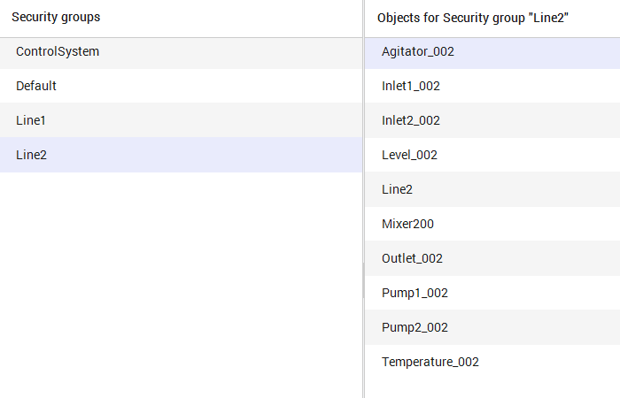
Figure 27-11: Click Line2 to verify the instances have been moved. The Objects for Security group "Line2" now shows all Line2 equipment. (page 9-19)
Step 13: Click Line2 to verify the instances have been moved.
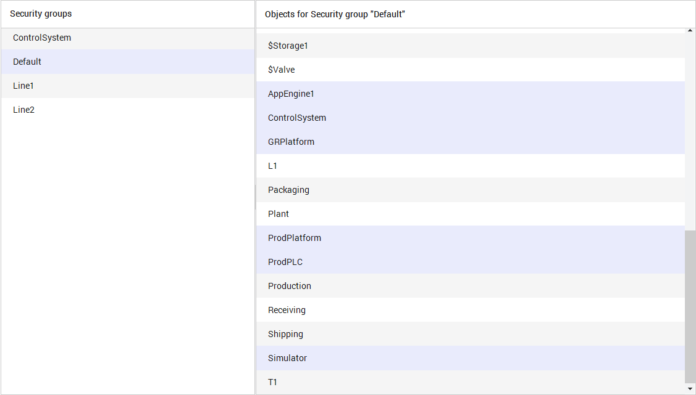
Figure 27-11a: Default security group after the Line2 objects have been removed — showing the remaining system-level objects that have not yet been moved to any group. (page 9-19)
Step 14: Move the following instances from the Default security group to the ControlSystem security group:
AppEngine1
ControlSystem
GRPlatform
ProdPlatform
ProdPLC
Simulator
Note: For single-node environments, skip ProdPlatform.
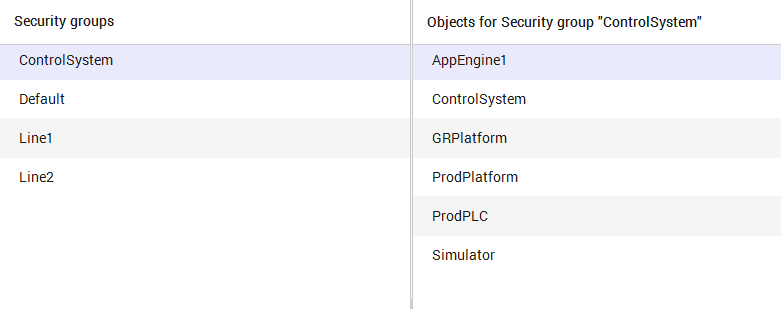
Figure 27-12: Click ControlSystem to verify the instances have been moved. The Objects for Security group "ControlSystem" now shows: AppEngine1, ControlSystem, GRPlatform, ProdPlatform, ProdPLC, Simulator. (page 9-20)
Step 15: Click ControlSystem to verify the instances have been moved.
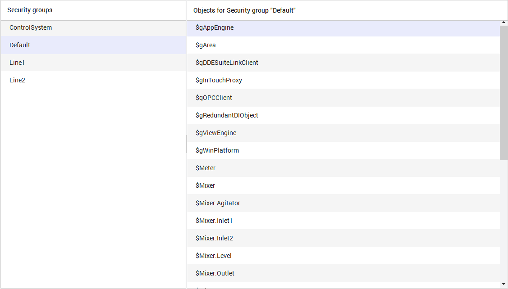
Figure 27-13: After all assignments, the Default security group contains only the objects that were not moved — system objects like $gAppEngine, $gArea, $gDDESuiteLinkClient, $gOPCClient, etc. (page 9-20)
Configure Security Roles
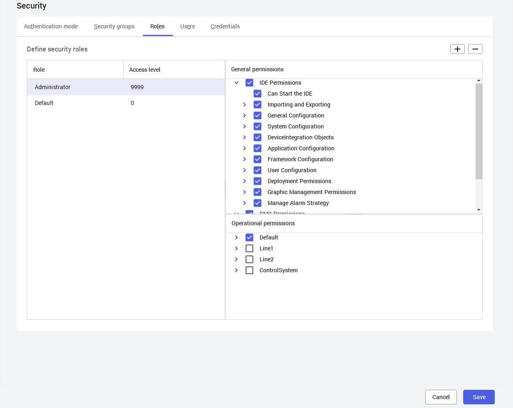
Figure 27-14: Click the Roles tab. The Define security roles list shows Administrator (Access level: 9999) and Default (Access level: 0). The right panel shows the General permissions for the selected role. (page 9-21)
Step 16: Click the Roles tab.
Add OS Groups as Roles
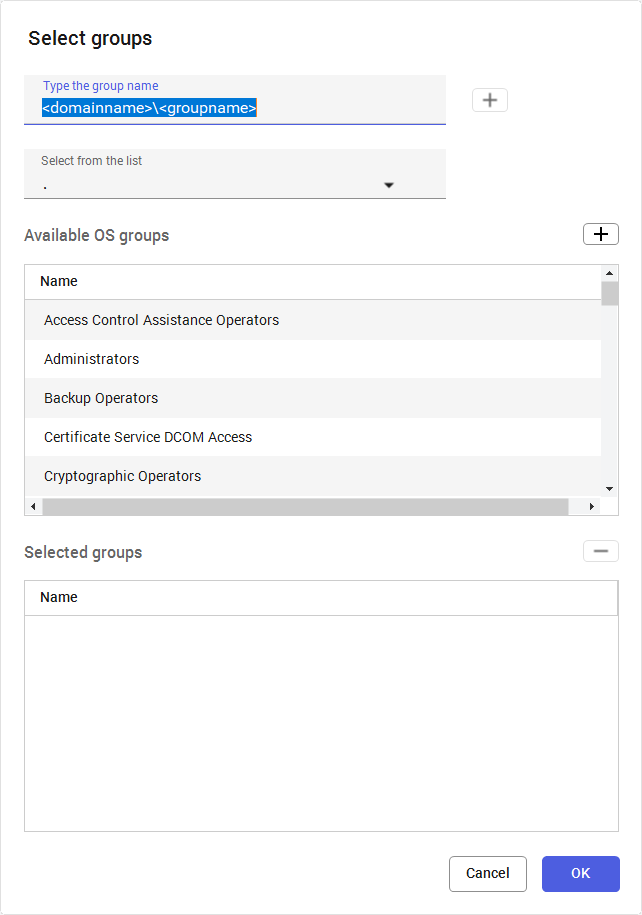
Figure 27-15: Click the Add new Role (+) button. The Select groups dialog box appears, showing Available OS groups from the system. (page 9-22)
Step 17: Click the Add new Role (+) button.
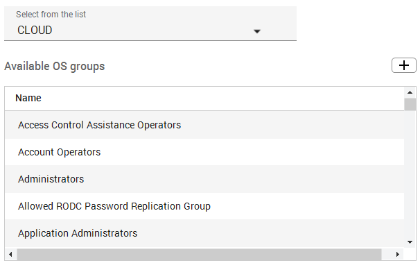
Figure 27-16: In the Select from the list dropdown, select the domain name ("CLOUD" in this example) or leave the default if no domain controller is available. The Available OS groups list now displays domain groups. (page 9-23)
Step 18: In the Select from the list dropdown, select the domain name (CLOUD) or leave the default (".") if no domain controller is available.
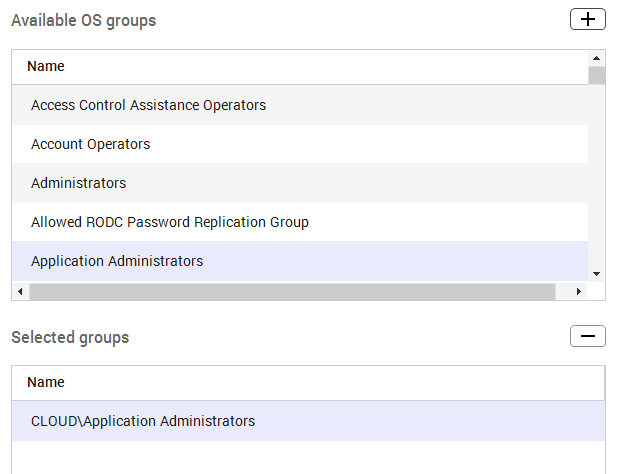
Figure 27-17: Select Application Administrators from Available OS groups, then click the Add selected OS Group (+) button. The group appears in the Selected groups list. (page 9-24)
Step 19: In the Available OS groups list, select Application Administrators.
Step 20: Click the Add selected OS Group (+) button.
Step 21: Repeat to add the following OS Groups:
Application Developers 1
Plant Maintenance 1
Plant Operators 1
Plant Operators 2
Plant Supervisors 1
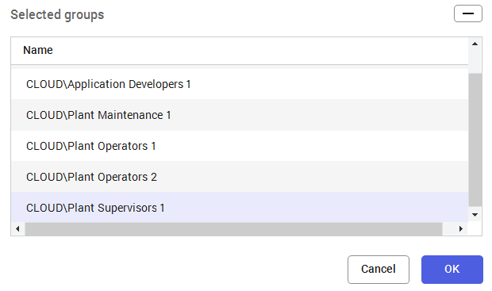
Figure 27-18: All six OS groups have been added to the Selected groups list: CLOUD\Application Administrators, CLOUD\Application Developers 1, CLOUD\Plant Maintenance 1, CLOUD\Plant Operators 1, CLOUD\Plant Operators 2, CLOUD\Plant Supervisors 1. Click OK to confirm. (page 9-24)
Step 22: Click OK.
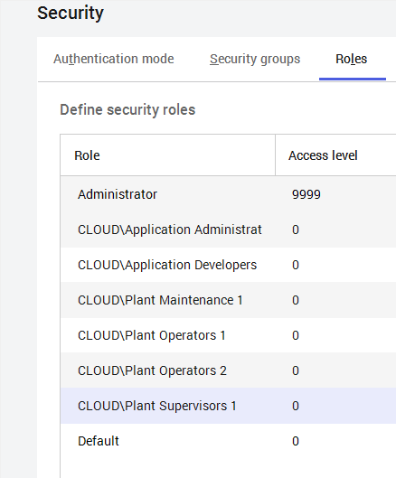
Figure 27-19: The OS Groups are now added to the Define security roles list. All new roles have Access level 0. Do NOT click Save at this point!(page 9-25)
Configure the Default Role
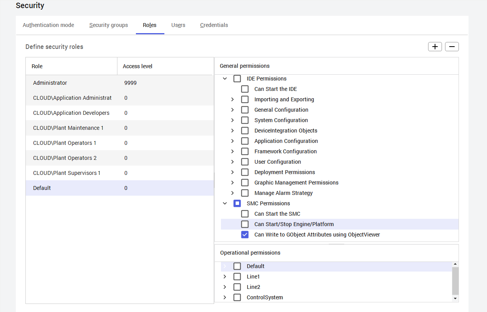
Figure 27-20: Select the Default role. Uncheck IDE Permissions (and all children), SMC Permissions > Can Start SMC, and SMC Permissions > Can Start/Stop Engine/Platform. The only permission left checked is "Can Write to GObject Attributes using ObjectViewer." Also uncheck the Default security group in Operational permissions. (page 9-26)
Step 23: In the Define security roles list, select the Default security role.
Step 24: In the General permissions list, uncheck:
IDE Permissions (this unchecks all sub-permissions)
SMC Permissions → Can Start the SMC
SMC Permissions → Can Start/Stop Engine/Platform
The only permission checked will be Can Write to GObject Attributes using ObjectViewer.
Step 25: In the Operational permissions list, uncheck the Default security group.
Warning: All users inherit permissions from the built-in Default role. Assigning "Can Write to GObject Attributes using ObjectViewer" to this role is not good practice — it is done here only to allow testing through Object Viewer in a later lab.
Configure the Administrator Role
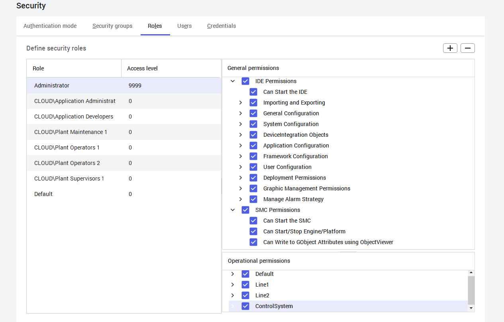
Figure 27-21: Select the Administrator role. All General permissions (IDE Permissions and SMC Permissions) are checked by default. All Operational permissions (Default, Line1, Line2, ControlSystem) are also checked. (page 9-27)
Step 26: Select the Administrator role and configure permissions as follows:
Category
Permission
Setting
General
IDE Permissions
Checked (default)
General
SMC Permissions
Checked (default)
Operational
Default
Checked (default)
Operational
Line1
Checked
Operational
Line2
Checked
Operational
ControlSystem
Checked
Configure Application Administrators Role
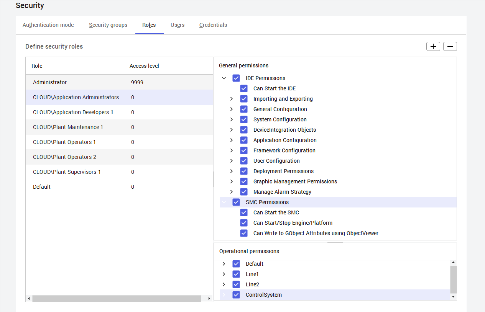
Figure 27-22: Select the Application Administrators role. All General permissions (IDE + SMC) and all Operational permissions (Default, Line1, Line2, ControlSystem) are checked. (page 9-28)
Step 27: Select the Application Administrators role and configure:
Category
Permission
Setting
General
IDE Permissions
Checked
General
SMC Permissions
Checked
Operational
Default
Checked
Operational
Line1
Checked
Operational
Line2
Checked
Operational
ControlSystem
Checked
Configure Application Developers 1 Role
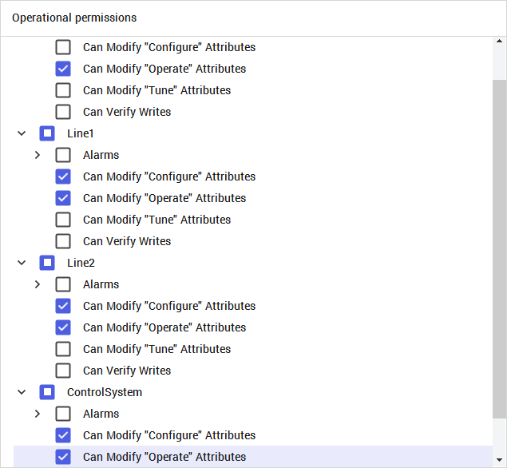
Figure 27-23: With Application Developers 1 selected, General permissions show IDE Permissions checked (except User Configuration) and SMC Permissions checked (except Can Start/Stop Engine/Platform). Operational permissions show Can Modify "Configure" and "Operate" Attributes checked for Default, Line1, Line2, and ControlSystem. (page 9-30)
Step 28: Select Application Developers 1 and configure:
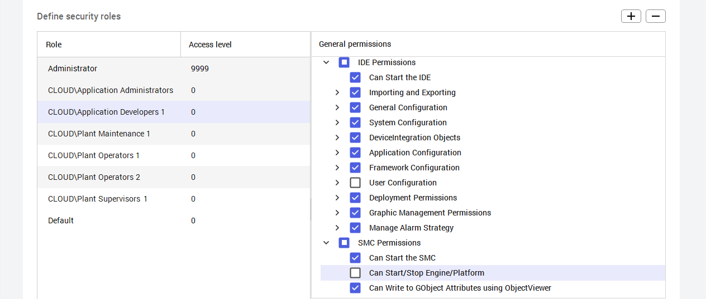
Figure 27-23a: Application Developers 1 General permissions: IDE Permissions is checked (but User Configuration is unchecked). SMC Permissions is checked (but Can Start/Stop Engine/Platform is unchecked). (page 9-29)
Category
Permission
Setting
General
IDE Permissions
Checked
General
User Configuration
Unchecked
General
SMC Permissions
Checked
General
Can Start/Stop Engine/Platform
Unchecked
Step 29: Configure Operational permissions for Application Developers 1:
Security Group
Permission
Setting
Default
Can Modify "Operate" Attributes
Checked
Line1
Can Modify "Configure" Attributes
Checked
Line1
Can Modify "Operate" Attributes
Checked
Line2
Can Modify "Configure" Attributes
Checked
Line2
Can Modify "Operate" Attributes
Checked
ControlSystem
Can Modify "Configure" Attributes
Checked
ControlSystem
Can Modify "Operate" Attributes
Checked
Note: All currently deployed objects belong to the Default security group. Application developers need Operate permissions for this group to place objects off scan for redeployment.
Configure Plant Maintenance 1 Role
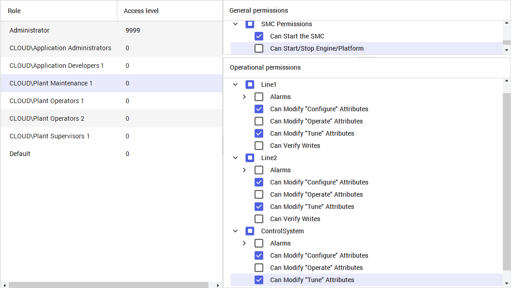
Figure 27-24: Select Plant Maintenance 1. SMC Permissions are checked except Can Start/Stop Engine/Platform. For Line1, Line2, and ControlSystem: Can Modify "Configure" and "Tune" Attributes are checked. Can Modify "Operate" Attributes is unchecked. (page 9-31)
Step 30: Configure Plant Maintenance 1:
Category
Permission
Setting
General
SMC Permissions
Checked
General
Can Start/Stop Engine/Platform
Unchecked
Operational
Line1 — Can Modify "Configure" Attributes
Checked
Operational
Line1 — Can Modify "Tune" Attributes
Checked
Operational
Line2 — Can Modify "Configure" Attributes
Checked
Operational
Line2 — Can Modify "Tune" Attributes
Checked
Operational
ControlSystem — Can Modify "Configure" Attributes
Checked
Operational
ControlSystem — Can Modify "Tune" Attributes
Checked
Plant Maintenance Role Logic: Maintenance personnel are granted Tune and Configure permissions (to adjust alarm setpoints, PID tuning, and reconfigure objects) but not Operate permissions (no direct process control). They also lack "Can Start the IDE" and "Can Start/Stop Engine/Platform" — preventing them from opening the IDE or controlling engine lifecycles.
Configure Plant Operators 1 Role
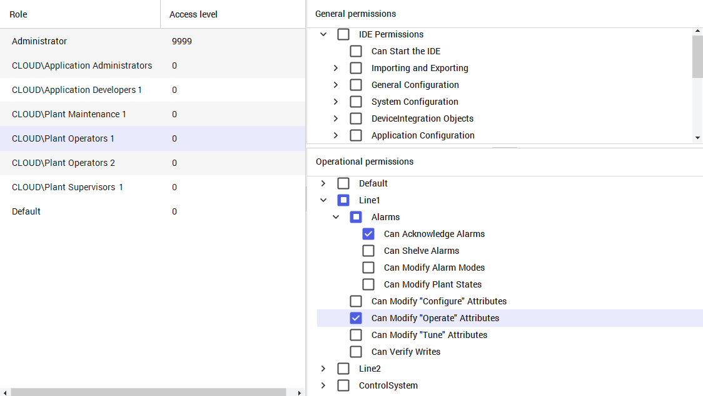
Figure 27-25: Plant Operators 1 has no IDE permissions. Operational permissions for Line1: Can Acknowledge Alarms and Can Modify "Operate" Attributes are checked. All other lines and permissions are unchecked. (page 9-32)
Step 31: Configure Plant Operators 1:
Security Group
Permission
Setting
Line1
Can Acknowledge Alarms
Checked
Line1
Can Modify "Operate" Attributes
Checked
Configure Plant Operators 2 Role
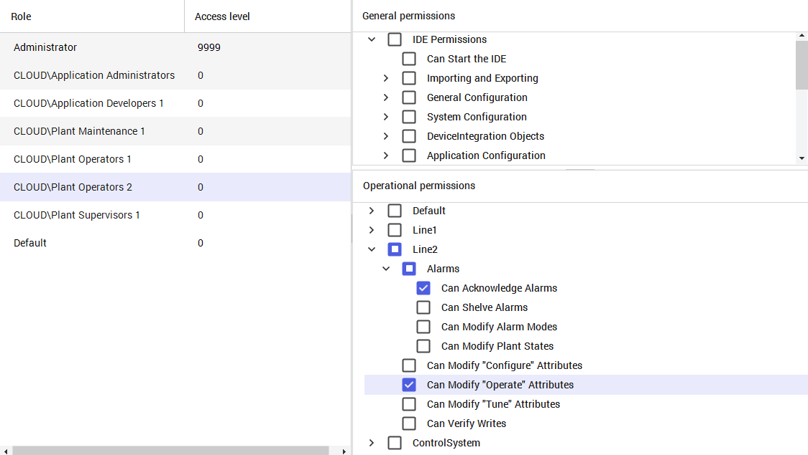
Figure 27-26: Plant Operators 2 has no IDE permissions. Operational permissions for Line2: Can Acknowledge Alarms and Can Modify "Operate" Attributes are checked. All other lines and permissions are unchecked. (page 9-33)
Step 32: Configure Plant Operators 2:
Security Group
Permission
Setting
Line2
Can Acknowledge Alarms
Checked
Line2
Can Modify "Operate" Attributes
Checked
Configure Plant Supervisors 1 Role & Save
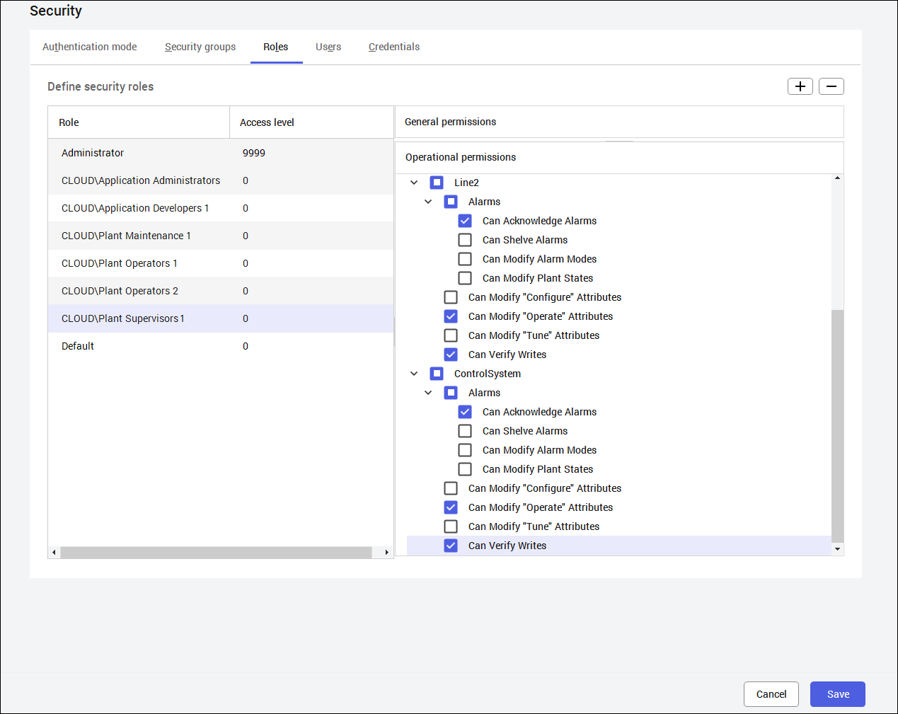
Figure 27-27: Plant Supervisors 1 has operational permissions for Line1, Line2, and ControlSystem: Can Acknowledge Alarms, Can Modify "Operate" Attributes, and Can Verify Writes are all checked. No IDE permissions. (page 9-34)
Step 33: Configure Plant Supervisors 1:
Security Group
Permission
Setting
Line1
Can Acknowledge Alarms
Checked
Line1
Can Modify "Operate" Attributes
Checked
Line1
Can Verify Writes
Checked
Line2
Can Acknowledge Alarms
Checked
Line2
Can Modify "Operate" Attributes
Checked
Line2
Can Verify Writes
Checked
ControlSystem
Can Acknowledge Alarms
Checked
ControlSystem
Can Modify "Operate" Attributes
Checked
ControlSystem
Can Verify Writes
Checked
Step 34: Click Save to apply the security configuration.
Role Permission Summary:
Role
IDE
Operate
Tune/Configure
Alarms
Verify Writes
Administrator
✅ Full
✅ All Groups
✅ All Groups
✅ All Groups
✅ All Groups
App Administrators
✅ Full
✅ All Groups
✅ All Groups
✅ All Groups
✅ All Groups
App Developers 1
✅ (no User Mgmt)
✅ All Groups
✅ All Groups
—
—
Plant Maintenance 1
❌
❌
✅ Lines+Ctrl
—
—
Plant Operators 1
❌
✅ Line1
❌
✅ Line1
❌
Plant Operators 2
❌
✅ Line2
❌
✅ Line2
❌
Plant Supervisors 1
❌
✅ All Lines
❌
✅ All Lines
✅ All Lines
Test Security — Login as Different Roles
After saving, security is enabled. You will be prompted to log in. Test the security by logging in as different users:
Test 1: Plant Maintenance (should be denied IDE access)
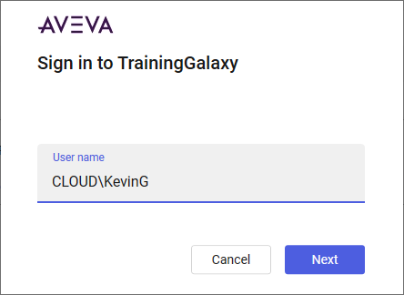
Figure 27-28: The Sign in to TrainingGalaxy dialog appears. Enter the username for a Plant Maintenance 1 user (e.g., CLOUD\KevinG). Click Next. (page 9-35)
Step 35: Log in as a member of the Plant Maintenance 1 security role:
Role
Name
Username
Plant Maintenance 1
Kevin Green
CLOUD\KevinG
Plant Maintenance 1
Monica Reed
CLOUD\MonicaR
Step 36: Click Next.
Figure 27-29: Enter the password (ww) and click Sign in. (page 9-35)
Step 37: In the Enter password field, enter ww.
Step 38: Click Sign in.
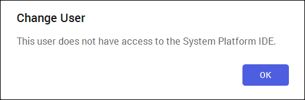
Figure 27-30: An "Access Denied" dialog appears: "This user does not have access to the System Platform IDE." This is expected because the Plant Maintenance role was not granted "Can Start the IDE" permission. Click OK. (page 9-36)
This confirms the security is working! Plant Maintenance personnel can tune and configure objects at runtime but cannot open the IDE. Click OK, then log in as an Application Developer to continue.
Test 2: Application Developer (should gain IDE access)
Step 39: Click OK on the access denied dialog.
Step 40: Log in as a member of the Application Developers 1 security role:
Role
Name
Username
Password
Application Developers 1
Thomas Miller
CLOUD\ThomasM
ww
Application Developers 1
Carol Morris
CLOUD\CarolM
ww
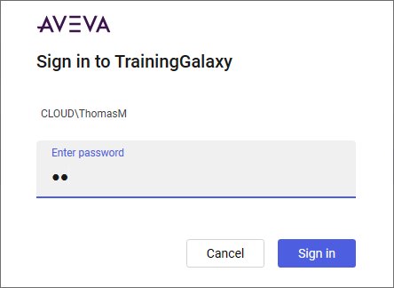
Figure 27-31: Sign in with CLOUD\ThomasM and password ww. This user has IDE permissions and should be able to access the IDE. (page 9-36)
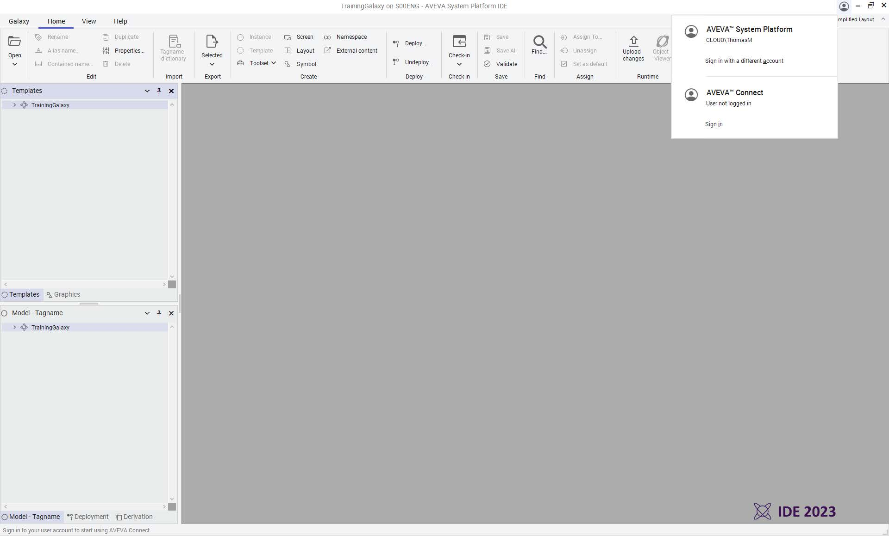
Figure 27-32: After a few moments, the IDE closes and reopens. The user is logged in as CLOUD\ThomasM (visible in the right panel). The IDE is accessible because Application Developers have "Can Start the IDE" permission. Notice that most objects need to be deployed because their SecurityGroup attribute was modified. (page 9-37)
Step 41: Click the profile icon to verify the user logged in to the IDE.
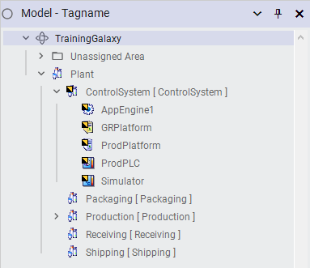
Figure 27-33: The Model browser shows the plant structure: TrainingGalaxy → Plant → ControlSystem (with AppEngine1, GRPlatform, ProdPlatform, ProdPLC, Simulator), Packaging, Production, Receiving, Shipping. Objects will need redeployment due to SecurityGroup changes. (page 9-37)
Note: You will deploy the objects in the next lab (Lab 17 — Implementing Object Security). The security group assignments modified the SecurityGroup attribute on objects, requiring redeployment.
Quiz: Security Overview + Lab 16
Test Your Knowledge
Q1: What are the four authentication modes available in the Security configuration?
Click to reveal answer
None (Open Security), Galaxy, OS User based, and OS Group based. There is also an Authentication providers option for AIM/Azure AD integration.
Q2: In the Security Model, what is the relationship between Security Groups, Roles, and Users?
Click to reveal answer
Security Groups contain AutomationObjects. Roles are granted Operational Permissions onto Security Groups. Users belong to one or more Roles and receive the sum of all permissions from their assigned Roles.
Q3: What is the difference between "Can Modify Operate Attributes" and "Can Modify Configure Attributes"?
Click to reveal answer
"Can Modify Operate Attributes" allows daily operational tasks like changing setpoints, outputs, and control modes. "Can Modify Configure Attributes" allows major configuration changes and requires the object to be set to Off scan first.
Q4: Why did the Plant Maintenance user receive an "Access Denied" message when trying to open the IDE?
Click to reveal answer
The Plant Maintenance 1 role was not granted "Can Start the IDE" permission (under IDE Permissions in General permissions). This role only had SMC Permissions and Operational permissions (Tune and Configure) for the production lines.
Q5: What happens to all new objects created in a Galaxy with respect to Security Groups?
Click to reveal answer
All new objects belong to the Default Security Group by default. This group cannot be removed. Objects must be manually moved to other security groups as needed.
Q6: What is the Login time setting used for in OS Group based authentication, and why did the lab set it to 3000?
Click to reveal answer
Login time (in milliseconds) is the timeout period for validating user membership against OS groups. After the timeout, the system defaults to the local cache. The lab set it to 3000 ms to allow for a more seamless experience when testing different users, especially in intermittent or slow network scenarios.
Q7: What is the Plant Supervisors 1 role allowed to do that Plant Operators 1 is not?
Click to reveal answer
Plant Supervisors 1 has access to all three operational areas (Line1, Line2, ControlSystem) and has Can Verify Writes permission. Plant Operators 1 only has access to Line1 (Can Acknowledge Alarms + Can Modify Operate Attributes) and no Verify Writes permission.
Q8: After enabling security and assigning new Security Groups, what must happen to deployed objects before they function correctly?
Click to reveal answer
Objects must be redeployed because their SecurityGroup attribute was modified when they were moved between security groups. The IDE will show objects needing deployment, and this will be addressed in Lab 17.
Q9: Can you modify the General permissions for the Administrator role? Why or why not?
Click to reveal answer
No, you cannot modify the General permissions for the Administrator role. The system enforces that the Administrator always has full General permissions to prevent accidental lockout from critical system functions.
Q10: What security limitation should be aware of regarding password storage in Galaxy authentication mode?
Click to reveal answer
Passwords are encrypted but stored in a database that is accessible. The system is not designed to stop determined programmers from accessing it. For higher-level security, use OS-based authentication with Microsoft tools, password timeout, and electronic signature authentication.
Source: AVEVA Application Server 2023 Training Manual, Module 9 Section 1 + Lab 16